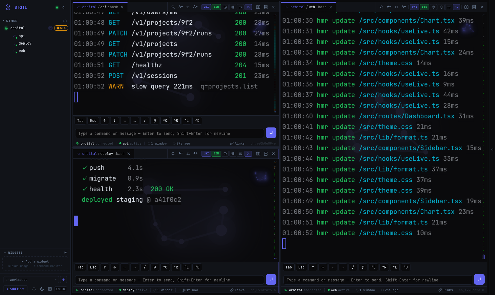

A self-hosted hub for your terminal sessions. SSH into your machines,
attach to tmux, and get every session as a fast, persistent web
terminal — one browser tab for your whole fleet.

Three tmux sessions on one host, split across panes — live, reconnect-safe, in a browser.
A single Go daemon plus a web client. Nothing is installed on the machines you manage.
Sigil connects outward over SSH to machines you already have access to. A host needs sshd, tmux and a shell — nothing else, and nothing new to trust.
tmux already keeps work alive across disconnects. Sigil adds replay-then-live reconnect, so a dropped tab resumes exactly where it left off with no lost output.
History is kept as logical lines, so copying doesn't inject hard wraps, text reflows to any width, and URLs stay intact and clickable.
Split panes and tabbed sessions on the desktop; a thumb-friendly layout with a bottom session strip on the phone. Installable as a PWA.
CPU, load, memory (PSI-aware), disk, network and top processes per host, collected over the same SSH connection.
Match a regex against a session's output and fire an effect: flash the pane, tint it, beep, toast, or call an HMAC-signed webhook.
Two processes and one TOML file. Full walkthrough in SETUP.md.
# build git clone https://github.com/mijkal/sigil.git && cd sigil make setup-config # writes ~/.config/sigil/config.toml make build-web && make build # configure: a token, and a host you can already ssh to openssl rand -hex 32 # put this in hub.auth.tokens # run — the hub on :7778, the web client on :7777 ./dist/sigild --config ~/.config/sigil/config.toml ./dist/sigil-web -dir ./web/dist -backend http://127.0.0.1:7778 # if anything is wrong, ask it sigil doctor # every failing check names the fix sigil doctor --json # same, for a script or an LLM agent
Sigil is a remote shell. A valid token is equivalent to shell access on every host you configure, and captured scrollback persists whatever your terminals printed — including secrets you echoed. Run it on a trusted network (LAN, VPN, Tailscale) or behind a TLS-terminating proxy, and read SECURITY.md first.